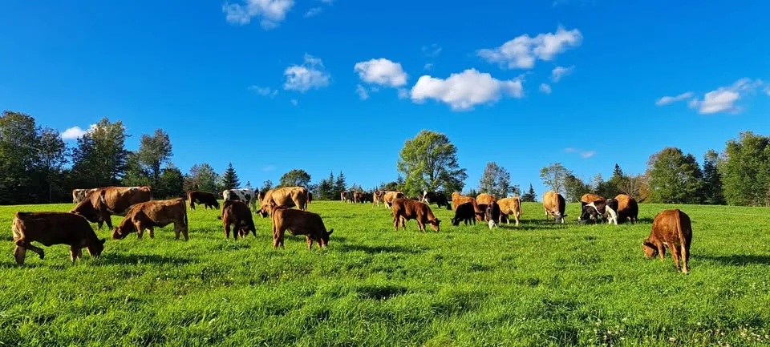
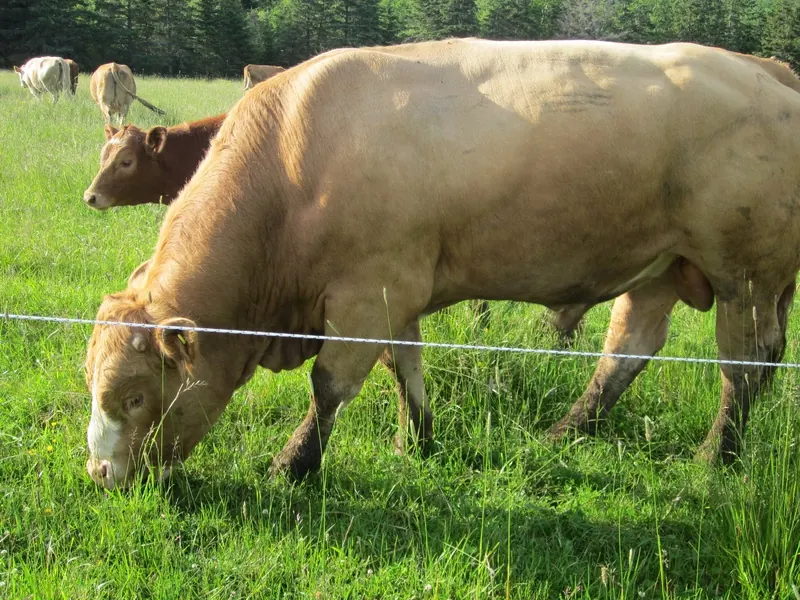
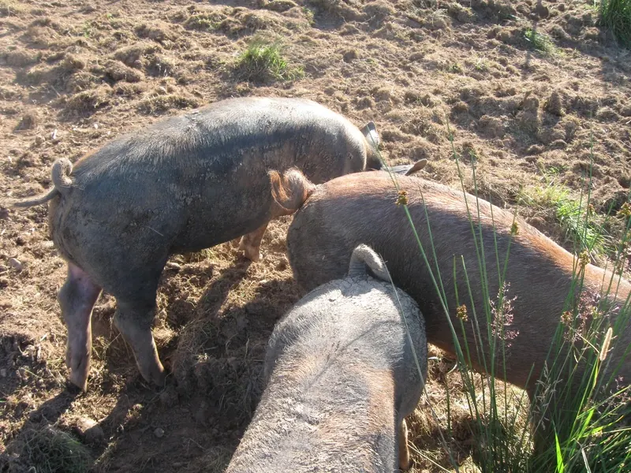
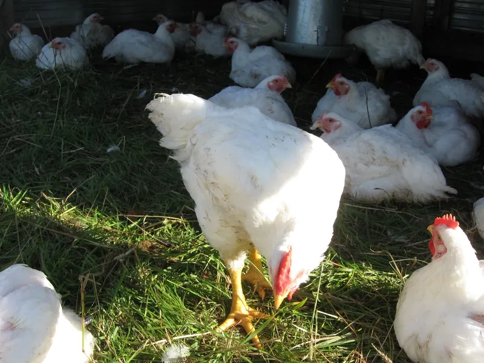
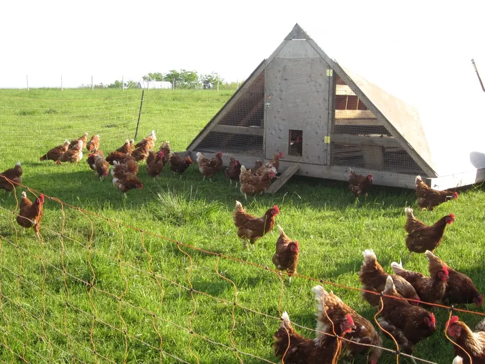
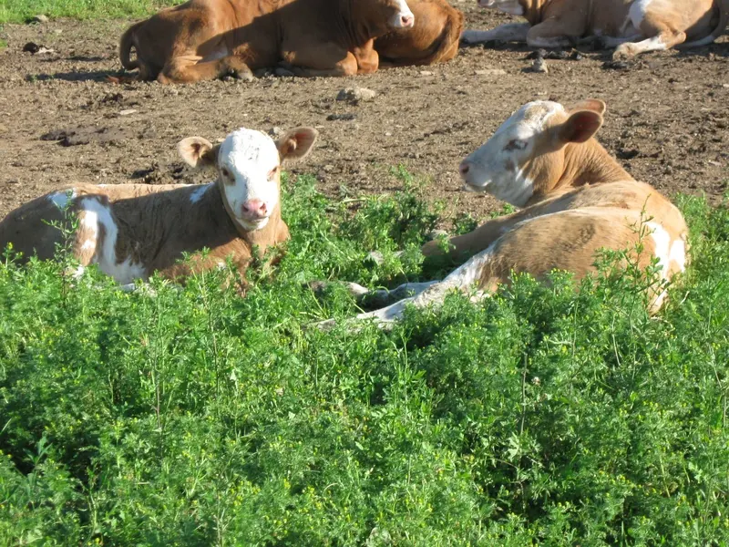

Saturday
Wolfville Farmers' Market
8:30 am to 1 pm, year-round
24 Elm Avenue, Wolfville
Grass fed beef, free range pork, pastured chicken and free range eggs, raised without sprays or chemical fertilizer.

Wolfville Farmers' Market
8:30 am to 1 pm, year-round
24 Elm Avenue, Wolfville
Kentville Farmers Market
10 am to 1:30 pm. Meat is packaged and fresh frozen, and we serve sausage on a bun and burgers, with chili in winter.
2439 Davidson St., Gaspereau Mountain
We deliver to nearby areas and take bulk orders.
Call or text 902-300-0248 before you come.
Beef, pork, chicken and eggs. Here is how each one is raised.

We grow true grass fed beef. No grain is ever present in their diet, and we don't use any animal by-products, growth hormones, antibiotics or steroids.
From May until November the cattle have access to 100 acres of managed rotating pasture and woodland. During the colder months they are fed grass silage and hay in our barns.
Call or text for what is in stock and current prices.

Our pigs are raised outside in a fenced paddock, where they have access to pasture and shelter. In this natural environment they root and eat like a pig would in its natural habitat.
In addition to pasture, the pigs are fed a grain ration and apples from wild trees on our property.
Call or text for what is in stock and current prices.

Once the chicks are feathered well enough for the outside temperatures, we move them into outside pens that are partially enclosed for shelter. Here the birds can scratch, eat grass and insects, and sit in the sun.
The pens are moved every day to a new spot in one of our pastures, so the birds always have fresh grass. There are no antibiotics or growth hormones in our chicken, and it is processed at our local butcher's, which is provincially inspected.
Call or text for what is in stock and current prices.

Our eggs come from traditional breeds: Rhode Island Reds and White Leghorns. During the warmer months the hens are moved to pasture, where they live in two chicken houses on wheels that are moved every two to three days, giving them grass, insects and sunlight.
During the colder months the birds keep warm in the hen house, where they are free to roam and scratch in the hay. You can find our eggs at the farmers' markets.
We don't use any sprays or chemicals on our fields or pastures. What we do use is manure from our own livestock and the occasional application of lime.
We work to encourage pollinators, beneficial insects and biodiversity on the farm, and we till as little as we can with soil conservation in mind.
All of the meat we grow is processed at a provincially inspected facility within minutes of our farm.
We believe in regenerative practices and are not a fully regenerative farm but are working toward that goal. We believe in transparency and educating people on how we do things. We are passionate and proud small farmers.
Betty Jordan
Betty Jordan and her husband have run the farm on Gaspereau Mountain since 1995, and it has been operated by the family since 1911. Their son Tyler is the fourth generation to work it.
"It is not starting so much as it is continuing," says Betty. "We both grew up on farms and love growing good food and raising animals."
I like to feed people and I want to keep as much money in our community as possible. Also, I hate big box stores.
Betty Jordan

Our one-stop shop for pastured meats in NS. Other farms specialize in one or two meats, Jordan's does beef, pork, chicken, and eggs with superior quality.
Christopher, Google review
Great eggs and they are our goto chicken provider.
Bruce, Facebook review, 2024